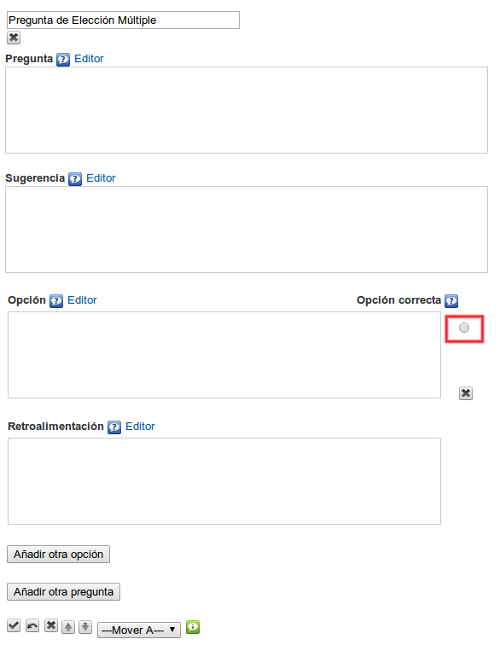

Pregunta de elección múltiple
Utilizaremos este iDevice para proponer una (o varias) preguntas tipo test al alumno. Cada una de las preguntas sólo podrá tener una respuesta correcta. Nos permite introducir varios tipos de retroalimentaciones que serán visualizadas por el alumno una vez completada las actividades o como pistas para realizarlas. Este tipo de actividades facilitará que el alumno pueda comprobar por sí mismo la asimilación de los contenidos trabajados.
Al seleccionar el iDevice "Pregunta de elección múltiple" del listado de iDevices se nos mostrará lo siguiente en nuestro eXeLearning:

En la parte superior, tendremos la posibilidad de modificar el título del iDevice.
En el campo "Pregunta" escribiremos el texto de la pregunta. El enunciado deberá ser claro. Evitaremos premisas negativas ya que tienden a ser ambiguas.
En el campo "Sugerencia" podremos proporcionar alguna pista que ayude al estudiante a contestar correctamente la pregunta. Podremos dejar el campo en blanco.
En el campo "Opción" escribiremos el texto con las opciones de respuesta disponibles. Marcaremos en el botón que se encuentra a la derecha del campo la opción que sea correcta. Podremos añadir opciones pulsando el botón "Añadir otra opción". Siempre será recomendable ofrecer un rango de entre 3 y 4 opciones de respuesta.
En el campo "Retroalimentación" escribiremos la retroalimentación que queremos que vean los lectores después de haber realizado la actividad. Si dejamos el campo vacío se ofrecerá la retroalimentación por defecto.
Podremos añadir nuevas preguntas en el iDevice pulsando el botón "Añadir otra pregunta"
Ejemplo de pregunta de elección múltiple: Geografía
Practica eXe: crear una pregunta de elección múltiple
Realiza los siguientes procedimientos:
- Abre el archivo miarchivo2.elp que has creado en la actividad anterior (Puedes hacer doble clic sobre él).
- Crea un iDevice "Pregunta elección múltiple" en el nodo "Preguntas". Modifica el título.
- En el campo "Pregunta" enlaza un archivo pdf.
- Crea en el mismo iDevice tres preguntas, cada una de ellas con tres opciones de respuesta posibles.
- Una vez terminado, haz clic en el botón
 para ver el resultado.
para ver el resultado. - Guarda los cambios. (Archivo > Guardar)
Si tienes alguna duda puedes consultar el siguiente vídeo:
eXeLearning. iDevice elección multiple. Adjuntar un archivo pdf. (CC by)
Obra publicada con Licencia Creative Commons Reconocimiento Compartir igual 4.0